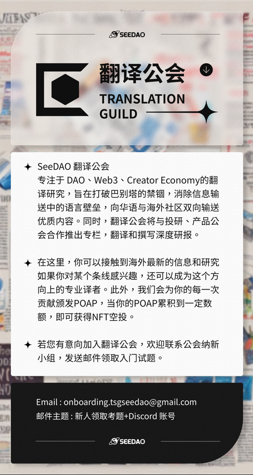

让我们来探访两个元宇宙：Walmart Land 和 Decentraland，因为我试图回答一个问题：所有元宇宙必须去中心化吗？
作者：coolhorsegirl
翻译：xunyang
校对：EffectChen
排版：惠子 审核: Ines
「点击底部 “阅读原文”直接跳转原链接 」
让我们来探访两个元宇宙：Walmart Land 和 Decentraland，因为我试图回答一个问题：所有元宇宙必须去中心化吗？在这个过程中，我将整理出每个元宇宙背后的议程，并权衡通过 DAO 构建元宇宙的成本和收益。圣诞晚宴上，我工作引来了许多讨论（或者说审问）。”web3 将权力赋予人民，”我说，虽然这有点陈词滥调。“它是去中心化的。想象一下，如果每个人都可以对他们的社交媒体如何运作进行投票，而不像马克·扎克伯格（Mark Zuckerberg）那样对 Facebook 做出决策，会发生什么？”这个例子对于我来说很好理解，但其中一些人已经 80 多岁了，对 web3 世界没有太多了解。我已经尽了最大努力。总之我的观点很明确：web3 旨在实现全面民主化。” 对吗？后来，我的祖父母让我解释一个关于 web3 最热门话题的速成课程：元宇宙。我下意识地退缩了，妈妈在桌子底下踢了一下我的腿。当向困惑的长辈们解释元宇宙（可能他们并不真正关心）时，我突然发现自己生活在 web3 推特的陈词滥调中。在吃烤面包和馅料的间隙，我让他们回想《The Office where Dwight uses Second Life 的那一集，以及我小时候玩 Club Penguin 的场景，或者甚至只是 VR 头盔的样子，“我发誓，元宇宙已经存在很长时间了。” 当我详细介绍 web3 中最难理解的部分之一时，他们很勉强地点了点头。元宇宙 - 互联网新世界中的沉浸式虚拟世界的一部分——提供了一个（通常）去中心化的虚拟空间网络，用户可以在其中交互、交易和创建内容。它通常通过游戏、社交和在线交易市场提供了一种 web3 式数字所有权核心。不难就能找到一些我祖父母可能能够理解的现实世界的应用程序，并且随着“Second Life”和“ Club Penguin”等伪元宇宙悠久历史的发展，真的元宇宙最近成为了主流。9 月下旬，沃尔玛在 Roblox 上推出了一对“沉浸式体验”项目 - Walmart Land 和 Walmart Universe of Play。那么沃尔玛的高层到底是在 Roblox 上创建了一个贴着元宇宙标签的烂摊子，还是说这种中心化的元宇宙体验会成为未来标准？那天晚上，我 8 岁的表弟还向我炫耀了他在 Roblox 的体验，这些经历似乎改变了他的一生，详细程度超出了我对他词汇量的预期。我跑题了。我喜欢沃尔玛，在许多次自驾旅行中，他们的停车场对我就像家一样。而且在新年刚开始的这段时间里，没有人真正回到工作状态，所以我有时间来发散一下脑海里闪过的想法。因此，根据我在沃尔玛元宇宙中的经验以及对去中心化元宇宙 Decentraland 的快速体验，来研究这样一个问题：所有元宇宙都必须是去中心化的吗？
走进沃尔玛的元宇宙
我下载了 Roblox，感觉有点激动。但就像我参加的那个新年除夕派对一样，我异想天开地以为 Walmart Land 会爆满。可 Walmart Land 的反乌托邦般的景象和声音只吸引了三个玩家——甚至还有人抄袭了我的装扮，真是该死！ 这不是一个好的开始。并且这些东西看起来有点像山寨版的乐高，它们的价格让我想起了我在苏黎世的周末。我寻找战利品箱遇到了点麻烦，因此我无法领取硬币从而登上飞艇或者去商店买一个新的装备。至少可以说，用户体验是存在明显问题的。因此，我准备在聊天室里寻求帮助，但是我担心他们的年龄可能会阻碍他们提供任何真正有意义的指导。我的担忧得到了证实：“员工”并不存在。 我 2018 年的 MacBook Air 在整个游戏过程风扇声音很大，我不知道该如何从这个摩天轮上下来。Roblox 游戏商店的 Walmart Land 页面充斥着负面评论。用户反馈似乎不在沃尔玛试图“引领文化对话的相关性”（直接引用沃尔玛首席营销官 William White 的话）的优先事项清单上。 最终，我下了摩天轮（通过重新启动游戏），捡了一些硬币，然后去了商店。最后就是一张穿搭照。（在评价我之前记得先看看你的 Roblox 装备——这是我唯一能支付得起的。）
沃尔玛元宇宙的真相
Walmart Land 和 Second Life 有点像，都是面向儿童的营销。 官方称，Walmart Land 允许用户以全新的交互方式与品牌互动。实际上，这是向儿童或沃尔玛公司定义的“年轻购物者”推销玩具的一种方式。Roblox 每天有超过 5000 万活跃用户，其中 ⅔ 未满 16 岁。也许这种评价过于表面了，但这种情况我们以前确实见到过。沃尔玛想要加入元宇宙的炒作是有道理的 - 这是一个赚钱的工具。Second Life 是最早广泛流行的元宇宙体验产品之一，其用户峰值时超过 100 万。在 2003 年推出 20 年后，Second Life 的 GDP（每年超过 5 亿美元）比一些国家的都还要高。而另一个用户界面要好得多的元宇宙游戏——Fortnite，是免费的，但它跟沃尔玛乐园做了类似的事情——向孩子们推销商品，赚了 200 亿美元。我在 Walmart Land 花了很长时间才能赚到金币去买衣服，在 Fortnite 里只需用我妈妈信用卡上的 20 美元就能在 30 秒内搞定。还可以购买舞蹈动作和道具来助我取得游戏中的成功。而且奇怪的是，在 Fortnite 购物似乎比在沃尔玛那边少些烦恼。为什么呢？
我很快的就创造了一个新的角色，而且它的身体部件不是方块组成的。与沃尔玛相比，是非常大的改进。并且很有意思的是，这些服装和物品选项的每一项都经过 DAO 投票选出来的。千禧一代的着装风格非常流行，我认为这主要归功于玩家群体。无论是为避免配件类别被物品挡住，我们需要把“手部”单独划分为新类别，还是 MANA 持有者的委托机制等等，所有事情可以在 Decentraland 治理论坛上提出讨论。最大的好处：更好的用户界面，和更好的用户体验。我想说，看到玩家们能决定他们游戏的细节，这个非常酷。它带来了一些我10岁之前的美好回忆，玩家可以投票决定企鹅俱乐部应该为企鹅提供哪种颜色的伪元宇宙。 从其他方面来看，元宇宙的去中心化似乎在微观管理（micro-manage）方面有着巨大的缺陷。前面提到的“手部”提案实现起来非常容易，从理论上来讲，Walmart Land 的开发人员可以在几分钟内解决。但是在 Decentraland，这个提案有 800 字，而且已经“讨论了近一年”（他们的原话，不是我说的）。将一个类别拆分出来花了一年时间，这一点令人很担忧。批评 DAO 决策速度慢（或缺乏决策）的负面评论很常见。即便如此，元宇宙代币是 2023 年截至目前加密货币市场中表现最好的板块，$MANA 在过去几周上涨了近 38%。其他元宇宙代币从新年开始也上涨，例如 The Sandbox 的 $SAND 上涨了 31.3%，Gala Games 的 $GALA 价格翻倍等等。
Walmart Land vs. Decentraland
元宇宙的价值观与 web3 的价值观一致，我在餐桌上向我的大家庭解释了这一点：用户应该控制和拥有他们创建的内容。Walmart Land 并没有真正体现元宇宙的本质：互联网的去中心化。Walmart Land 运营的方式很像极权主义，很明显整个游戏各个方面都在传达另一个意思：“请购买我们的玩具，孩子们”。可以明显地看出，这些企业将 web3 视为一个机会，利用这个机会来剥削更年轻、购买力更强的一代人，但数字原生一代会识破这种企图。MBA 类型的人仍然不了解 DAO 的真正力量，不仅仅是从技术角度，而是从很难教授的文化层面。这就是为什么以 DAO 方式运行的元宇宙没有企业式剥削的文化。DAO 允许用户在某种程度上设计他们选择的元宇宙。由 DAO 运营的元宇宙是由元宇宙用户设计并为其服务的。这个系统看起来挺完美的：在一个人花最多时间的元宇宙中，他也对其发展做出了最大贡献，虽然这种去中心化也带来了一些麻烦。关于 Decentraland 增加“手部”类别的争论可能看起来很无聊，但是不管怎样，它确实突显了与 Walmart Land 的不同之处，特别是在氛围上。而 Walmart Land 只会反复引导用户购买任何被沃尔玛精英们认为应该包括的商品。DAO 和元宇宙有可能通过提供更高的透明度、安全性和去中心化来彻底改变我们在数字世界中互动和交易的方式。这些技术的结合可以为数字经济的创新和增长创造新的机会。Decentraland 和 Walmart Land 相比，可以很容易地看出由 DAO 运营的元宇宙比那些由“只注重股东价值最大化而非用户声音”的中心化实体创建的元宇宙存在很大优势。最好的用户体验来自去中心化的元宇宙 & 激活其社区的声音。那么，沃尔玛什么时候去中心化?